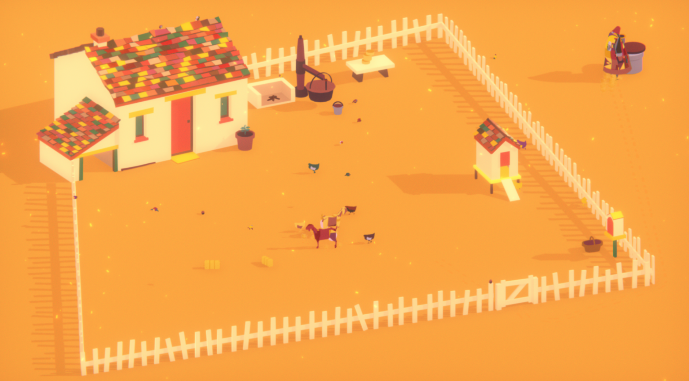
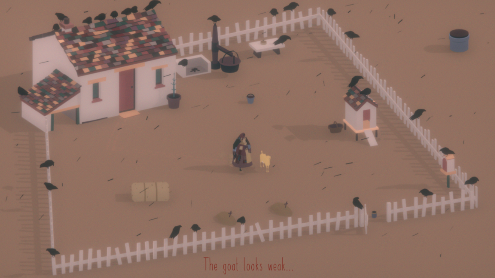
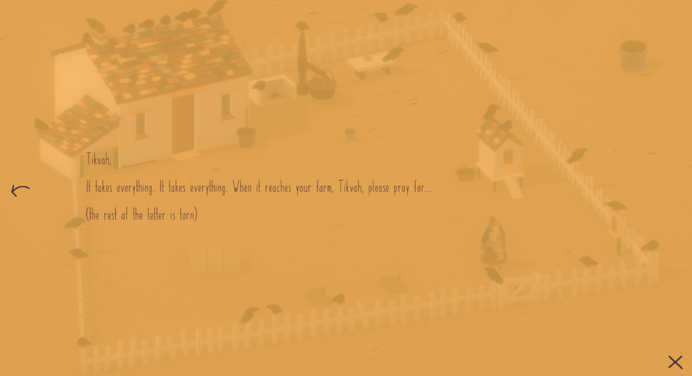
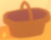
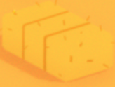

Nick Grundman's Very Professional Portfolio
Nick Grundman's Very Professional Portfolio
Nick Grundman's Very Professional Portfolio
Nick Grundman's Very Professional Portfolio
Hover over the images for more information



Sound effects: Clinks of a can, water pouring, whistling, rooster crowing, gentle
footsteps
Music: Relaxing, simple. Gets ominous near the end
Controls:
Mouse only, point and click
The game tells you nothing other than
showing what you can click on. You have to discover what everything does through
experimentation.
Each day lasts the same length and there are only a
certain number of days. Playthroughs are supposed to take about an hour and you
can't go back without a full reset.
Can build your own routine. I always
grabbed my cup, opened the coop, and got water. After that, I watered the plant,
milked the goats, and made some cheese. When the merchant came, I’d either buy some
hay or try to save up for a new goat.
Maximum travel distance is very
slightly outside of the gates to get water from the well, no further.
Can
water plant once a day, grows slightly every morning that it is watered.
Only
human other than Tikvah is the merchant, who comes in the afternoon once a
day.
Merchant sells hay for one cheese, new goats for 5 cheese, and brings
mail that can be read. You can also sell goats to him for 5 cheese.
Letters
show hints of the outside world… like how reportedly Tikvah’s goat cheese is being
sold by some merchant in the market.
Mail starts out as hopeful messages from
family, but gets more and more distressing each day.
Goats can be called over
and pet whenever, they eat some hay once a day, and can be milked once a day.
Goat milk can be turned into cheese, one wheel per goat milk bucket.
Chickens
can be let out of the coop in the morning and go to sleep every night.
Closing the coop seems pointless. Nothing can hurt my chickens.
Closing the
gate also seems pointless. Chickens can wander outside the gate anyways and goats
never leave.
Don’t know what the bottom right thing or the basket does Can go
to sleep every night, goes into the morning If you wait too long to go to bed Tikvah
goes to sleep on her own
One night 4 Scary Nightmare Goats appeared from beyond the world and wandered toward
my house. I went to bed before letting them get close. Not sure if this was a glitch
or intentionally frightening.
I let the chickens out just before night and
then they went outside, wouldn’t go to sleep, and trying to open it again after
closing it said “Chickens are sleeping.”
I got my water cup stuck in the gate
and can’t grab it again because the gate hitbox blocks the mouse.
Merchant
sometimes doesn’t let you talk to him, Tikvah gets into position and then they stare
at each other.
Screen fades to black at night and sometimes needs a reload
(and replaying the day...) to advance to the next day.



It took awhile to get my bearings. For the first day or I didn't milk my goats, so I
had nothing to do with the merchant.
Second day, I finally learned how to make
cheese, but, since I waited too long making it, I didn't have time to visit the
merchant. Great. I did learn how to get to the well and water my plant though.
I ignored the merchant for a while and forgot to get enough hay. Will my goats
starve? The merchant never came today. The goats are already hungry and I have no
food for tomorrow. Can bury dead goats. I bought a new one with all my cheese.
Chickens didn’t come out either. They haven’t come back. Crows everywhere. Can’t
milk my goat. The basket is apparently to get eggs from the coop. I never got to do
this though, because my chickens disappeared by the time I learned. A dead song bird
on the ground. The merchant sprinted in much faster than usual today. I feel like
I’m walking slower. “Merchant has nothing to trade.” Nothing to do. Next day, there
is nothing. No objects, no goats, no crows. Everything is gray. It cuts to black,
shows credits, ends.


(need to fill in when complete)
Have you tried shutting the hell up?